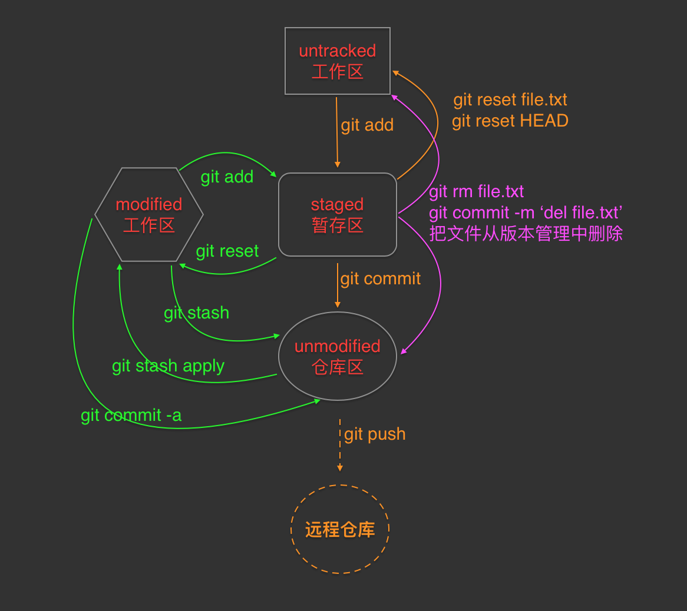
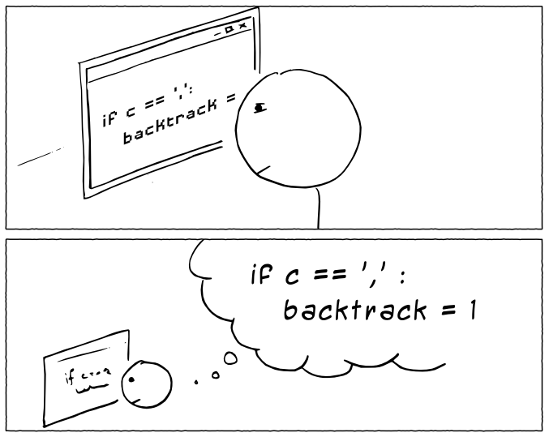
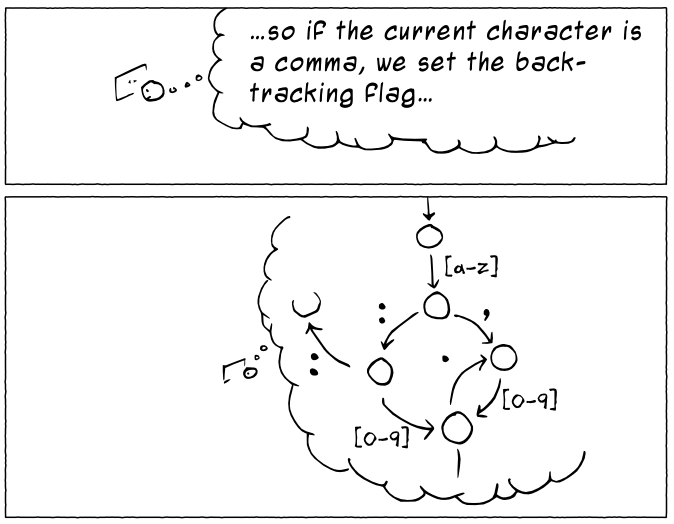
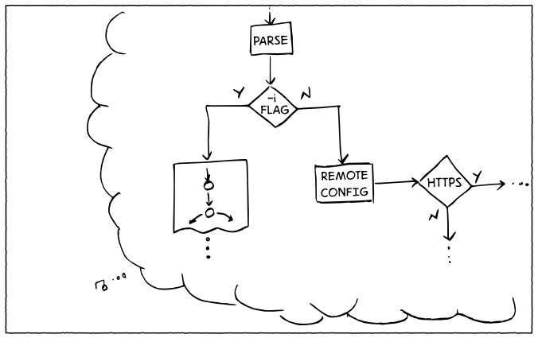
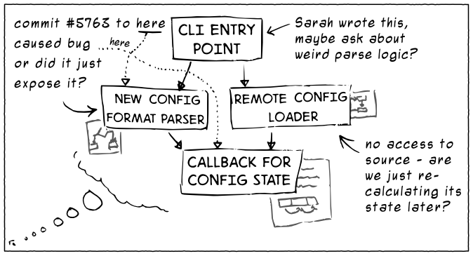
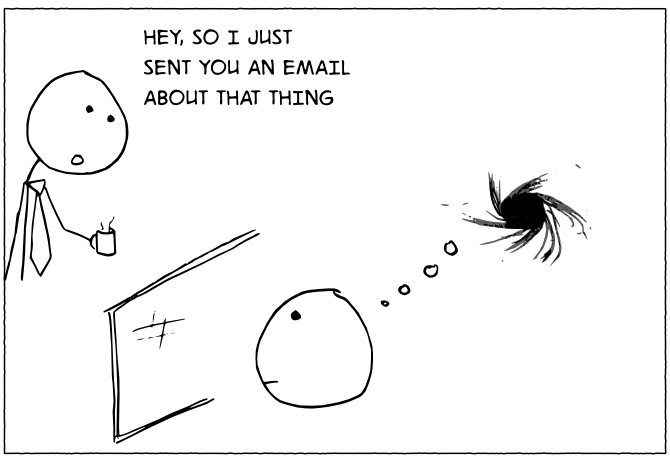
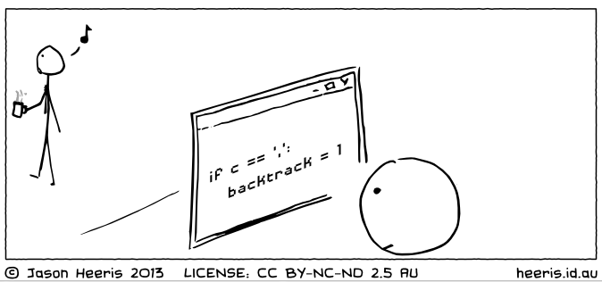
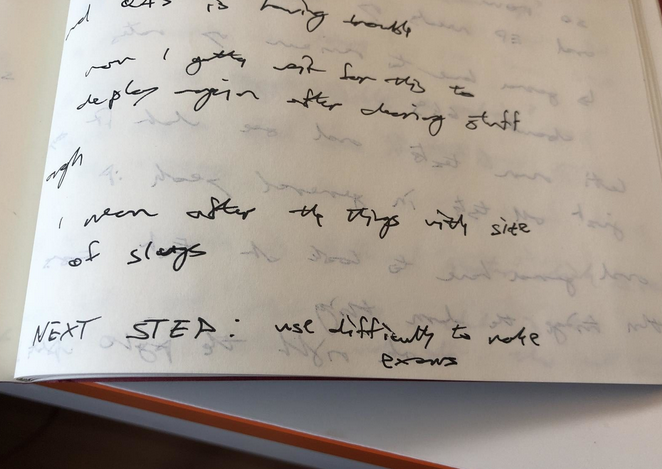
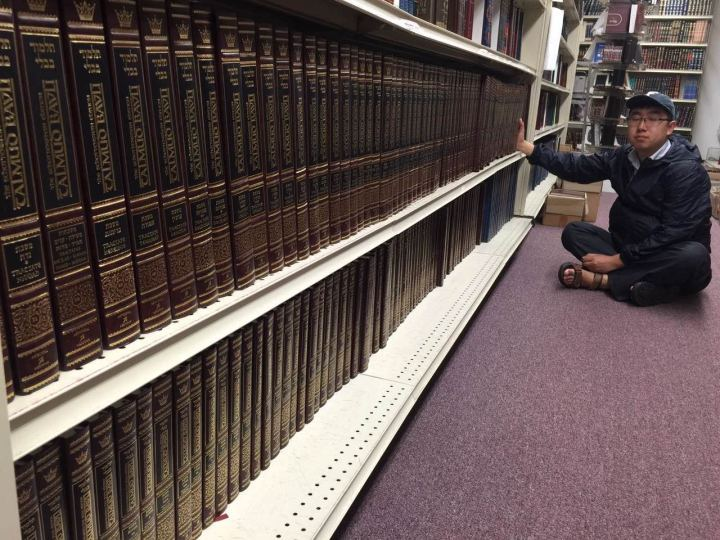

Zoom.Quiet
190120 2042
私塾
All Know All
闪电分享
@meepochen
Pandas 初体验
@mac19491
git 理解

@tanchangde
代码合并手册 …维基编撰指北
@chaozding
PKM 必要?
蠎味儿
@doituself @mac19491
串门的正确姿态
人肉索引自己的探索
@Shuangma
代码图示 diff
@XiaoYanWork
合理使用 Issue 思考
首位嗯哼,且 youtube
一切…






This Is Why You Shouldn’t Interrupt a Programmer

例蠎交流
404-101-4441
persnal knowledge managment
Talmud

能使目标对象对指定命题产生科学兴趣的技术
GitLab Flavored Markdown
版本管理